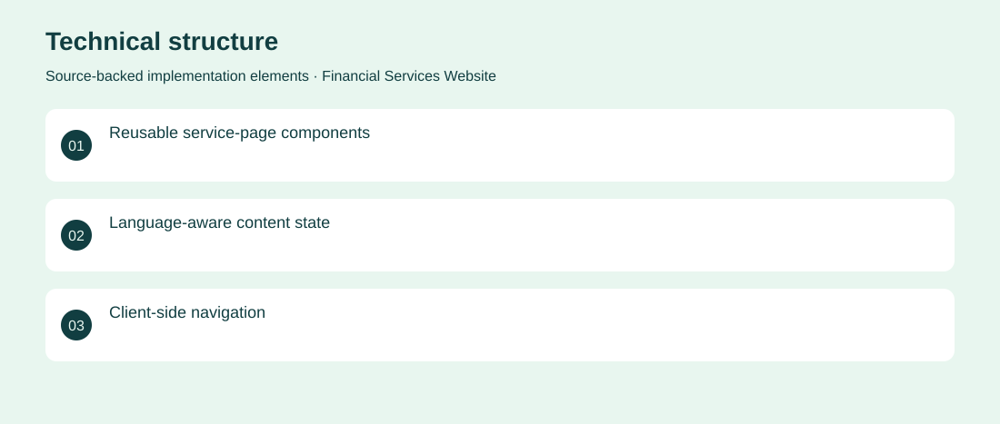

The project
A multilingual financial-services website with dedicated sections for financing, insurance, investment and business support. Modular React components keep the service presentation consistent across pages. Created a structured, multilingual interface with reusable navigation, service cards and content sections. Archived client implementation. No adoption, revenue or deployment claims are inferred from the repository.
The problem
A broad financial offering is difficult to navigate when every service uses an unrelated presentation.
The solution
Created a structured, multilingual interface with reusable navigation, service cards and content sections.
My contribution
Frontend engineering of the page structure, reusable components and language-dependent content.
Technical structure

The portfolio cover is an editorial illustration. No live product screenshot is presented for this project.
Showcase assets
{kind=link}
{kind=link}
{kind=link}
New portfolio identity. Newly designed marks are portfolio treatments, not claims of official client branding.